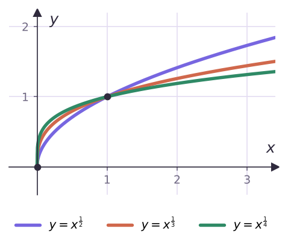
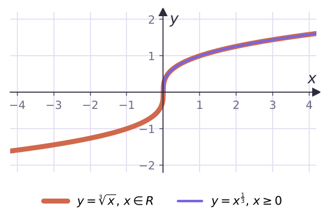

am/n = n√am
82/3 = ∛64 = 4 · (−8)1/3 — не определено


| Свойство | Формула |
|---|---|
| произведение | ap · aq = ap+q |
| частное | ap : aq = ap−q |
| степень степени | (ap)q = apq |
| произведение, частное | (ab)p = apbp, (a/b)p = ap/bp |
И пять свойств с примерами